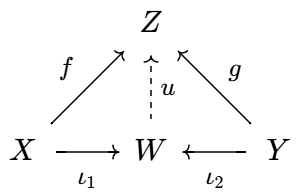

来自:
- 李文威《代数学方法》第二章
- 李文威《代数学讲义》附录B
- 香蕉空间 - 范畴论入门
- John Baez《Category Theory Course》2019.09.03
- Pierre Schapira《Categories and homological algebra》2009.01.10
范畴
范畴的定义
形象地说, 范畴是一个有向图, 图中的顶点称为对象, 有向边称为态射. 具体定义如下:
一个范畴 (category) `cc C` 由它的对象集合 `"Ob"(cc C)` 和态射集合
`"Mor"(cc C)` 组成, 此外还应满足:
-
边与点的关系 `cc C` 中任意态射 `f` 都有确定的来源与目标对象.
换言之有来源映射和目标映射 `s, t: "Mor"(cc C) to "Ob"(cc C)`.
若 `f` 是一个态射, 那么 `X := s(f)`, `Y := t(f)` 都是对象,
`f` 称为从 `X` 到 `Y` 的态射, 记为 `X overset f to Y` 或 `f: X to Y`.
-
点与边的关系 `cc C` 中任意两个对象 `X, Y` 确定了一族态射.
将全体从 `X` 到 `Y` 的态射称为 `(X, Y)` 的 Hom 集:
`Hom_C(X, Y) := s^-1(X) nn t^-1(Y)`.
因此 `f: X to Y` 的另一种写法是 `f in Hom_C(X, Y)`.
-
态射的合成与恒等态射
设 `f: X to Y`, `g: Y to Z`, 定义 `f, g` 的二元合成为 `f @ g`: `X to Z`, 或简记为 `f g`.
对每个对象 `X`, 都存在态射 `"id"_X: X to X`, 称为 `X` 到自身的恒等态射.
态射的合成满足:
`f(g h) = (f g)h quad` (结合律)
`f @ "id"_X = f = "id"_Y @ f quad`(恒等态射的性质).
恒等态射的性质保证了 `"id"_X` 的唯一性.
- 态射的逆 设态射 `f: X to Y`, 若存在 `g: Y to X` 使得 `f g = "id"_Y`, `g f = "id"_X`,
则称 `g` 是 `f` 的逆, `f` 是可逆态射或同构. `X` 到 `Y`
的全体同构记为 `"Isom"_(cc C)(X, Y)`. 由恒等态射的性质知道,
逆若存在则必唯一.
- 简记 `"End"_(cc C)(X) := Hom_C(X, X)`, `"Aut"_(cc C)(X) := "Isom"_(cc C)(X, X)`,
分别称为 `X` 的自同态集和自同构集.
`"End"(X)` 是幺半群, `"Aut"(X)` 是群.
- 对象集和态射集皆空的范畴称为空范畴, 记为 `bb 0`.
以字母表示对象, 箭头表示态射, 范畴可以用箭头图表很好地可视化.
如果图表中的箭头合成殊途同归, 我们就说它是交换的, 故箭头图表又称为交换图表.
比如下图就有 `g f = h` 和 `v u = y x`.
这些图表可以用 quiver 在线绘制.
子范畴、反范畴、积范畴
称 `cc C'` 是 `cc C` 的子范畴, 如果
- (金) `"Ob"(cc C') sube "Ob"(cc C)`;
- (木) `"Mor"(cc C') sube "Mor"(cc C)`;
- (水) `Hom_C'(X, Y) sube Hom_C(X, Y)`, 等号成立时称 `cc C'` 是全子范畴;
- (火) 态射的合成也是由 `cc C` 限制而来的;
- (土) 恒等态射也是由 `cc C` 限制而来的.
从图表上看, 子范畴就是从原图表中去掉一些点和箭头得到的图表.
如果仅仅移除点 (以及这些点关联的箭头), 而不去移除其它箭头的话, 得到的图表就是全子范畴.
设 `cc C` 是范畴, 将其箭头全部反转, 定义反范畴如下:
- (金) `"Ob"(cc C^"op") := "Ob"(cc C)`;
- (木) `"Mor"(cc C^"op") := "Mor"(cc C)`;
- (水) `"Hom"_(cc C^"op")(X, Y) := Hom_C(Y, X)` (反转箭头);
- (火) `f @^"op" g := g @ f` (反向合成);
- (土) 恒等态射定义同 `cc C`.
我们有 `(cc C^"op")^"op" = cc C`.
范畴与反范畴之间反转箭头的关系也叫做对偶 (dual) 原理. 比如, `cc C^"op"` 中的单态射就是 `cc C` 中的满态射.
给定范畴 `cc C_1`, `cc C_2`, 定义积范畴如下:
- (金) `"Ob"(cc C_1 xx cc C_2) := "Ob"(cc C_1) xx "Ob"(cc C_2)`;
- (木) `"Mor"(cc C_1 xx cc C_2) := "Mor"(cc C_1) xx "Mor"(cc C_2)`;
- (水) `"Hom"_(cc C_1 xx cc C_2)((X_1, X_2),(Y_1, Y_2))`
`:= "Hom"_(cc C_1)(X_1, Y_1) xx "Hom"_(cc C_2)(X_2, Y_2)`;
- (火) `(g_1, g_2) @ (f_1, f_2) := (g_1 f_1, g_2 f_2)`;
- (土) `"id"_(X_1, X_2) := ("id"_(X_1), "id"_(X_2))`.
总之, 一切都是逐分量地定义的. 积范畴可以推广到有限个乘积的情形.
范畴的例子
- 集合范畴 `sf(Set)`: 对象为 (某个宇宙中的) 所有集合, 态射为集合间的映射.
- 群范畴 `sf(Grp)`: 对象为所有群, 态射为群同态.
- 交换群范畴 `sf(Ab)`: 对象为所有交换群, 态射为群同态, 它是 `sf(Grp)` 的全子范畴.
- 域 `bbb k` 上的向量空间范畴 `sf(V ect)(bbb k)`: 对象为 `bbb k`
上所有向量空间, 态射为线性映射. 类似定义有限维向量空间范畴 `sf(V ect)_(f)(bbb k)`, 它是 `sf(V ect)(bbb k)` 的全子范畴.
总之, 有一大类范畴, 其对象是一些带有代数运算的集合, 态射则是集合之间保持这些运算的映射, 即同态.
这样的范畴还有环范畴 `sf(Ri ng)`, 交换环范畴 `sf(CRi ng)`, 环
`R` 上的左模范畴 `sf(Mod)_R` 等等.
下面的例子表明, 范畴中的态射不必是映射:
- 关系范畴 `sf(Rel)`:
对象为全体集合, `"Hom"(X, Y)` 是集合 `X, Y` 之间的全体二元关系.
态射合成定义为
`tau @ sigma := { (x, z): (x, y) in sigma and (y, z) in tau} }`.
- 拓扑空间范畴 `sf(To p)`: 对象为所有 Hausdorff 拓扑空间, 态射为连续映射.
类似定义带基点的拓扑空间范畴 `sf(To p)^ast`.
- 给定集合, 可以定义相应的离散范畴 `sf(Disc)(S)`: 对象集为 `S`, 态射仅有恒等态射 `{"id"_x: x in S}`.
单态射与满态射
设 `X, Y: cc C`, `f: X to Y`.
- 称 `f` 为单态射, 如果它满足左消去律: 对任意 `Z: cc C` 和任意 `g, h: Z to X` 有 `f g = f h iff g = h`.
- 称 `f` 为满态射, 如果它满足右消去律: 对任意 `Z: cc C` 和任意 `g, h: Y to Z` 有 `g f = h f iff g = h`.
- 称 `f` 左可逆, 如果存在 `g` 使得 `g f = "id"_X`; 称 `f` 右可逆, 如果存在 `g` 使得 `f g = "id"_Y`. 一个态射可逆当且仅当它左右皆可逆.
将所有箭头掉转, 单态射与满态射就可以互相转化, 因此单态射在反范畴里是满态射, 而满态射在反范畴里是单态射.
左可逆蕴涵单, 右可逆蕴涵满. 因此同构既是单态射又是满态射.
设 `f` 左可逆, 从等式 `f g = f h` 两边同乘以 `f` 的左逆就得到 `g = h`.
-
设 `f` 是集合间的单态射, 取 `g, h` 为常值映射
`g: z mapsto x_1`, `h: z mapsto x_2`. 于是
`f(x_1) = f(x_2)`
`rArr f g = f h`
`rArr g = h`
`rArr x_1 = x_2`.
这证明了 `f` 是单射函数.
-
又设 `g f = h f rArr g = h`,
反设 `f` 不是满射函数, 则 `EE y_0 in Y - f(X)`.
我们可以让 `g(y), h(y)` 在 `y in f(X)` 时相等, 但 `g(y_0) != h(y_0)`.
此时 `g f = h f` 但 `g != h`, 矛盾.
-
假如 `g, h` 是拓扑空间之间的连续映射, `g f = h f`,
此时 `g, h` 在 `f` 的像集上相等.
但 `f` 有稠密的像, 所以 `g, h` 处处相等.
因此 `f` 是满态射.
- 设 `R` 为一环, 同态 `f: ZZ to QQ`, `g, h: QQ to R`, 且 `g f = h f`.
同样 `g, h` 在 `f` 的像集上, 即在自变量为整数时相等.
我们要求同态保持幺元 1,
从而对任意正整数 `n in QQ`,
`g(1//n) g(n)`
`= g(n) g(1//n)`
`= g(n * 1//n)`
`= g(1)`
`= 1 in R`.
因此 `g(1//n)` 是 `g(n)` 在环 `R` 中的逆. 同理 `h(1//n)` 是 `h(n)` 的逆.
但 `g(n) = h(n)`, 由逆元唯一性知道 `g(1//n) = h(1//n)`.
从而对任意 `a in QQ` 成立 `g(a) = h(a)`. 因此 `f` 是满态射.
函子与自然变换
函子
函子是范畴到范畴的 "态射", 它将一个交换图表映为另一个交换图表.
设 `cc C', cc C` 为范畴. 一个函子 (functor) `F: cc C' to cc C` 由一对映射组成:
- (金) 对象间的映射 `F: "Ob"(cc C') to "Ob"(cc C)`;
- (木) 态射间的映射, 仍用同一个字母: `F: "Mor"(cc C') to "Mor"(cc C)`;
- (水) 保持来源与目标映射 `s, t`: `s F = F s`, `t F = F t`. 用 Hom 集的语言就是
`F: Hom_C'(X, Y) to Hom_C(F X, F Y)`,
即 `F` 将箭头 `X to Y` 映为 `F X to F Y`;
- (火) 保持态射的合成: `F(g @ f) = F(g) @ F(f)`;
- (土) 保持恒等态射: `F("id"_X) = "id"_(F X)`.
一般来说, 验证函子也只需验证它保持态射的合成与恒等态射.
- 函子的合成 设 `F: cc C_1 to cc C_2`, `G: cc C_2 to cc C_3`,
将它们对象间与态射间的映射分别合成, 就得到合成函子 `G @ F`.
函子的合成满足结合律.
- 反变函子
形如 `cc C' to cc C` 的函子称为共变函子, `cc {:C':}^"op" to cc C`
称为反变函子. 反变函子的定义在对象层次与前相同, 在态射层次则反转箭头方向, 即
`Hom_C'(X, Y) to Hom_C(F Y, F X) quad` (反转箭头),
`F(f g) = F(g) F(f) quad` (反向合成).
由于反范畴与范畴只在箭头方向上不同,
函子 `cc C' to cc C` 和 `cc {:C':}^"op" to cc C^"op"` 是一回事,
`cc {:C':}^"op" to cc C` 和 `cc C' to cc C^"op"` 也是一回事.
对于函子 `F: cc C' to cc C`,
- 在对象层次, 称 `F` 是本质满的, 若 `cc C` 中任一对象都同构于某个 `F X`.
这是把满射定义中的 "等于" 换成了 "同构于".
- 在态射层次,
称 `F` 是忠实的, 若 `Hom_C(X, Y) to Hom_C(F X, F Y)` 都是单射.
称 `F` 是全的, 如果上述映射都是满射.
既忠实又全的函子称为全忠实的.
- 设 `cc C'` 为 `cc C` 的子范畴, 则包含函子 `iota: cc C' to cc C` 是忠实的,
它在对象和态射层次都是包含映射; 它是全忠实的当且仅当 `cc C'` 是 `cc C` 的全子范畴.
- 忘却函子
忘却环的乘法, 可以将它视为加法群; 忘却所有结构便得到底层的集合.
在对象层次, 这些函子忘却一部分的代数结构 (环的乘法、向量空间的纯量乘法...),
在态射层次, 这些函子化为箭头之间的包含映射.
比如 `sf(Ri ng)` 到 `sf(Ab)` 的忘却函子就把两个环 `R, R'` 之间的环同态映为两个加法群的群同态.
忘却函子都是忠实的.
- 基本群 (一阶同伦群) 函子
设 `X` 是拓扑空间, `x in X`, 则 `pi_1(X, x)` 代表 `X` 在 `x` 这一点的基本群.
可以验证 `pi_1: sf(To p)^ast to sf(Grp)` 是函子.
自然变换
自然变换 设函子 `F, G: cc C' to cc C`. 从 `F` 到 `G` 的自然变换 `theta: F rarr G`
定义为一族态射
`theta = { theta_X in Hom_C(F X, G X) | X: cc C' }`.
换言之 `theta = {theta_X}_X`, 其中 `theta_X: F X to G X`.
自然变换要求对所有态射 `f: X to Y` 有 `theta_X @ G f = F f @ theta_Y`.
下面是两种常见的图解, 验证自然变换, 关键是验证下面的图表交换:
-
自然变换的合成
`theta: F to G` 和 `psi: G to H` 的合成定义为
`psi theta: F to H`, 使得 `(psi theta)_X = psi_X theta_X`.
合成运算满足结合律.
-
自然变换乘函子
对 `theta: F_1 to F_2` 左乘或右乘一个函子, 可以得到两个新的自然变换:
`theta G := {theta_(G Y)}_Y: F_1 G to F_2 G`,
`H theta := {H theta_X}_X: H F_1 to H F_2`.
当然, 前提是函子的合成 `F_1 G`, `F_2 G`, `H F_1`, `H F_2` 有意义.
我们有结合律 `(H theta) G = H (theta G)`.
- 记函子 `F: cc C' to cc C` 到自身的恒等变换为
`"id"_F := { "id"_(F X) | X: cc C' }`.
- 若 `theta: F to G` 中的态射皆为同构, 则称 `theta` 是自然同构,
定义其逆 `theta^-1: G to F` 为
`theta^-1 := { theta_X^-1 | theta_X in theta }`.
可以验证 `theta^-1 theta = "id"_F`, `theta theta^-1 = "id"_G`.
若 `theta` 是自然同构, 则它乘以函子后 `theta G, H theta` 也是同构.
函子与自然变换的例子
Hom 函子 给定范畴 `cc C` 及其对象 `X`, 定义协变 Hom 函子
`"Hom"(X, *): cc C to sf(Set)`,
(对象层次) `Y mapsto "Hom"(X, Y)`,
(态射层次) `f mapsto "Hom"(X, f)`,
其中 `f: Y to Z`,
`"Hom"(X, f): "Hom"(X, Y) to "Hom"(X, Z)` `:= g mapsto f g`.
同理定义反变 Hom 函子
`"Hom"(*, X): cc C^"op" to sf(Set)`
(对象层次) `Y mapsto Hom_C(Y, X)`,
(态射层次) `f mapsto "Hom"(f, X)`,
其中 `f: Z to Y`,
`"Hom"(f, X): Hom_C(Y, X) to Hom_C(Z, X)` `:= g mapsto g f`.
两个函子互为对偶.
助记: `"Hom"(X, f) = f @`, `"Hom"(f, X) = @ f`.
双重对偶空间
自然变换的一个典型例子是向量空间到其双重对偶空间的自然同态.
考虑 `bbb F` 上的向量空间 `V`, 它的对偶空间 `V^ast` 由全体 `V` 到 `bbb F` 的线性函数组成.
-
定义函子 `D` 如下
`D: sf(V ect)(bbb F)^"op" to sf(V ect)(bbb F)`
(对象层次) `V mapsto V^ast`
(态射层次) `cc A mapsto cc A^ast`.
其中 `cc A: V to W`,
`cc A^ast: W^ast to V^ast`
`:=`
`f mapsto f cc A`.
由于 `(cc(A B))^ast = cc B^ast cc A^ast`, `"id"_V^ast = "id"_(V^ast)`, 所以 `D` 是反变函子.
同理可构造另一个反变函子 `D^"op" = sf(V ect)(bbb F) to sf(V ect)(bbb F)^"op"`.
-
记 `"id"_(sf(V ect)(bbb F)` 是 `bbb F` 上向量空间范畴到自射的恒等函子. 定义自然变换
`"ev": "id"_(sf(V ect)(bbb F)) to D D^"op"`,
其中
`"ev"_V: V to V^(ast ast)`
`:=`
`v mapsto f mapsto f(v)`.
可以验证它满足自然变换的变换图表: `AA cc A: V to W`,
`"ev"_V @ D D^"op" cc A = "id"_(sf(V ect)(bbb F)) cc A @ "ev"_W`.
同理有另一个自然变换 `"id"_(sf(V ect)(bbb F)^"op") to D^"op" D`.
当线性空间限制到有限维时, 这两个自然变换都是自然同构.
泛性质
范畴论中, 常常通过对象在交换图表中的性质 (泛性质) 来定义它们.
这些对象如果存在则必唯一 (精确到同构).
始对象与终对象
- 始对象 若 `X: cc C` 满足: 对任意 `Y: cc C` 都存在唯一态射 `f: X to Y`, 则称 `X` 是 `cc C` 的始对象 (initial object).
- 终对象 若 `X: cc C` 满足: 对任意 `Y: cc C` 都存在唯一态射 `f: Y to X`, 则称 `X` 是 `cc C` 的终对象 (final object).
始对象与终对象互为对偶.
如果始对象与终对象同构, 则称它为 `cc C` 的零对象, 记为 `0`.
- `sf(Set)` 中, 始对象是空集, 终对象是单元素集合 (所有单元素集合同构);
- `sf(Mod)_R` 中, 始对象和终对象都是零模, 因此零模是零对象;
- `sf(Ri ng)` 中, 始对象是 `ZZ`, 终对象是零环.
- 域范畴既没有始对象也没有终对象.
积与余积
- 积 对 `X, Y: cc C`, 若存在对象 `W: cc C` 和态射 `pi_1: W to X`, `pi_2: W
to Y` 满足下列条件, 则称 `W` 是 `X` 和 `Y` 的积 (product), 并记 `W = X xx Y`:
对任意 `Z: cc C` 和态射 `f: Z to X`, `g: Z to Y`, 都有唯一的态射 `u: Z to W` 使下图交换:
`pi_1, pi_2` 称为投影映射, `u` 一般记为 `(f, g)`.
- 余积 对 `X, Y: cc C`, 若存在对象 `W: cc C` 和态射 `iota_1: X to W`, `iota_2: Y to W` 满足下列条件, 则称 `W` 是 `X` 和 `Y` 的余积 (coproduct), 并记 `W = X ⊔ Y`:
对任意 `Z: cc C` 和态射 `f: X to Z, `g: Y to Z`, 都有唯一的态射 `u: W to Z` 使下图交换:

`iota_1, iota_2` 称为包含映射, `u` 一般记为 `f o+ g` 或 `f ⊔ g`.
- `sf(Set)` 中, 积就是集合的笛卡尔积, 余积是集合的无交并:
`A ⊔ B := {(a, x): x in A} uu {(b, y): y in B}`;
- `sf(Mod)_R` 中, 积是模的积, 余积是模的直和;
- `sf(Ri ng)` 中, 积是环的积, 余积也存在, 但较为复杂;
等化子与余等化子
在数学中 "某某化子" 是指使某性质局部成立的对象的集合. 例如两个函数 `f, g: X to Y` 的等化子就是集合
`{x in X: f(x) = g(x)}`.
- `sf(Set)` 中, 两个态射 `f, g: X to Y` 的等化子是 `{x in X: f(x) = g(x)}`.
- `sf(Mod)_R` 中, 态射 `f, g: M to N` 的等化子是 `"Ker"(f - g)`, 余等化子是 `N//"Im"(f - g)`.